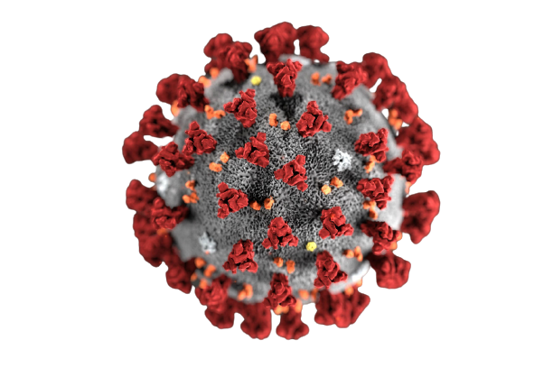
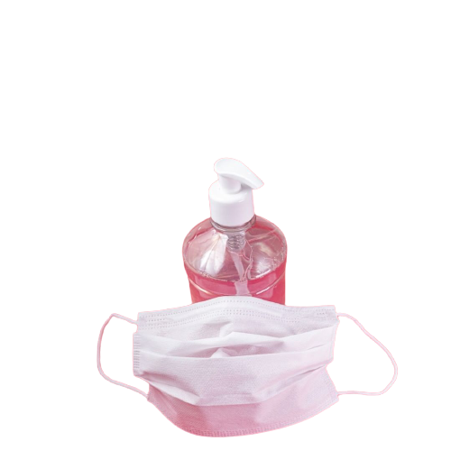

Coronavirus disease 2019 (COVID-19), also known as the coronavirus, or COVID, is a contagious disease caused by severe acute respiratory syndrome coronavirus 2 (SARS-CoV-2). The first known case was identified in Wuhan, China, in December 2019.The disease has since spread worldwide, leading to an ongoing pandemic.Symptoms of COVID-19 are variable, but often include fever,cough, headache,fatigue, breathing difficulties, and loss of smell and taste.Symptoms may begin one to fourteen days after exposure to the virus
Hand sanitizers provide a convenient and effective way to clean your hands if soap and water aren't available and your hands aren't covered in visible dirt or grease. According to a 2019 ruling by the FDA, a product can be marketed as a hand sanitizer if it contains ethyl alcohol (also called ethanol), isopropyl alcohol (isopropanol) or benzalkonium chloride as the active ingredient.
A cloth mask is intended to trap respiratory droplets that are released when the wearer talks, coughs or sneezes. It also acts as a barrier to protect the wearer from inhaling droplets released by others.The most effective cloths masks are made of multiple layers of tightly woven fabric like cotton. A mask with layers will stop more droplets from getting through your mask or escaping from it.

Social distancing means keeping a minimum distance of 5-6 feet between you and other people outside your home. This means no group gatherings and staying away from crowded places. It limits your exposure to the virus and keeps your family safe.Remember to step out alone to buy groceries and other essentials. Avoid taking other family members or anyone else with you. The government has instructed shop owners to ensure that social distancing is followed by all shoppers.